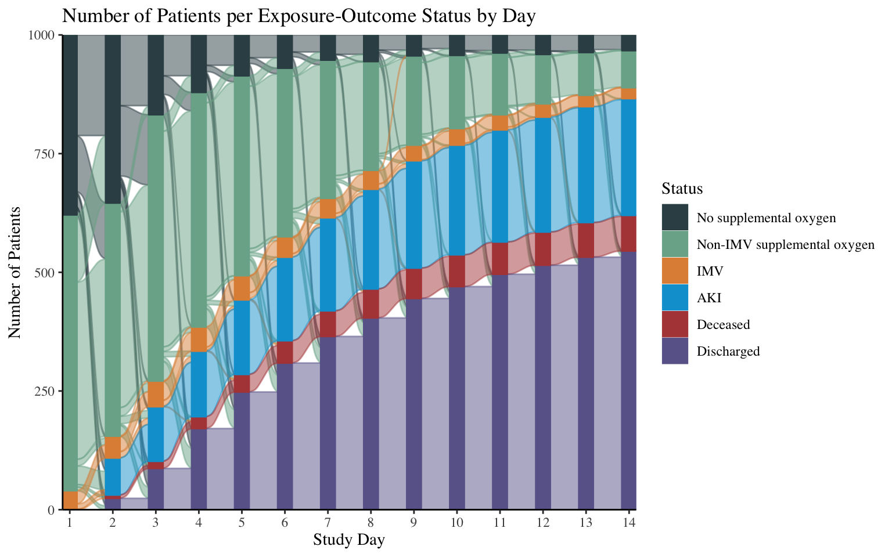
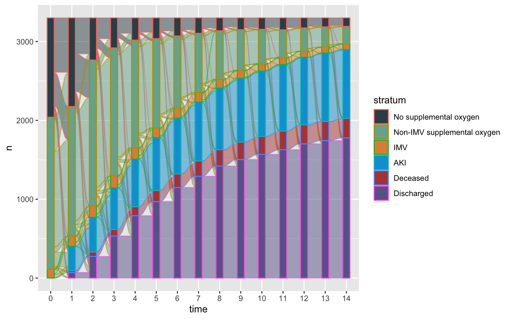
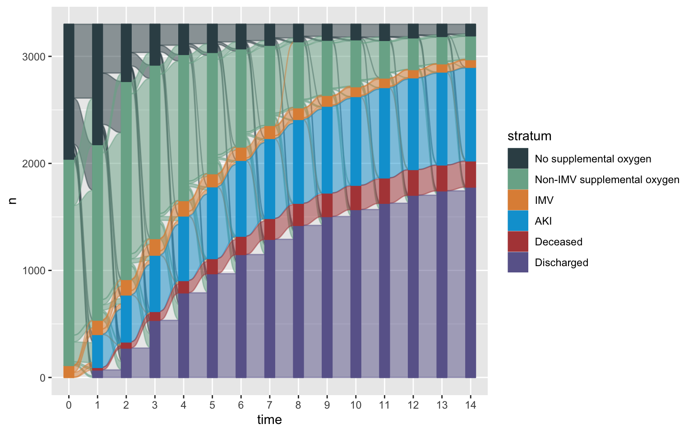
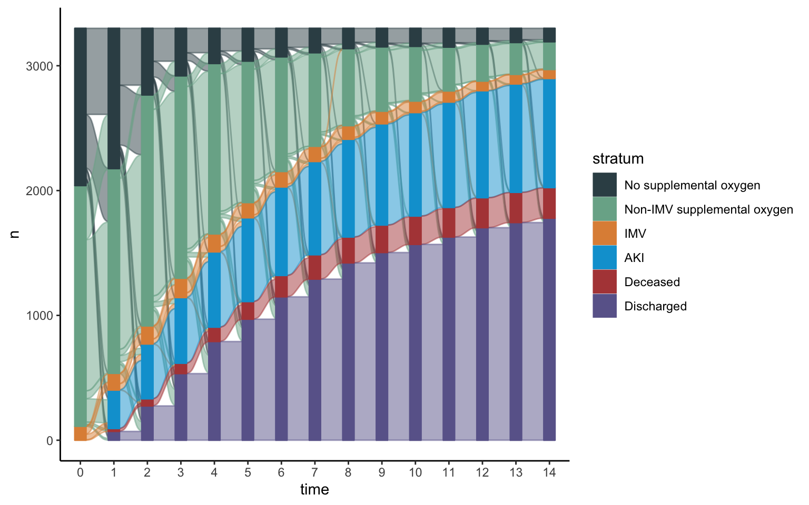
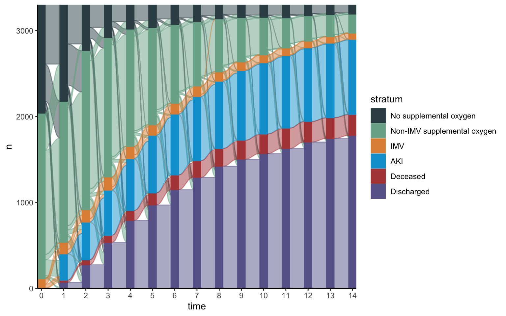
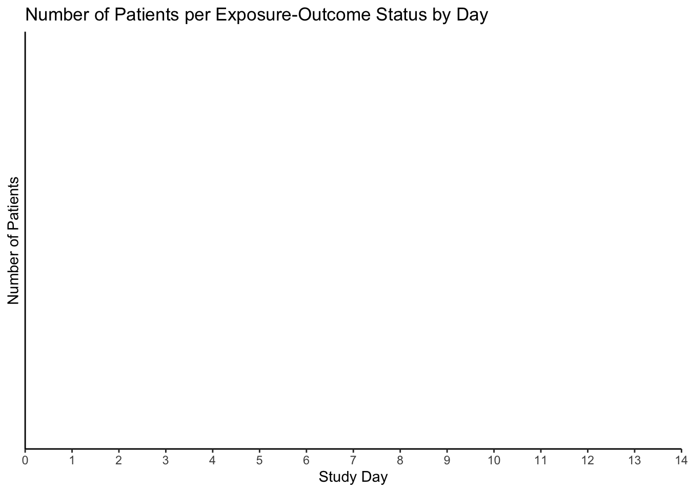

Alluvial plots, or Sankey diagrams, can be used to show the movement of individual units across a single variable, such as time. This post will first explain how to use the ggalluvial package with a straightforward use-case: showing how an illness severity score changes in a population of critically ill patients by day.
Then, we will use the same package and ideas to walk through how to show data we typically use for survival analyses in an alluvial chart. I’ll use ggalluvial to show the movement of the following complexities over time:
- categorical, time-varying exposure
- time-to-event outcome
- competing event
- loss to follow up
These plots can be organized to look similar to Kaplan Meier plots.

Step 0: Load long-form data
We’ll first read in the data set from my Github. This data is in long-form, meaning there is one row for every patient at every time point of the study. There are 3,300 patients in this data, and there are 14 time points, so 14 * 3,300 = 49,500 rows.
dat_long <- read_csv(here::here("blog/alluvial/aki_death_status.csv"))
dat_long# A tibble: 49,500 × 3
id time status
<dbl> <dbl> <chr>
1 1 0 Non-IMV supplemental oxygen
2 1 1 Non-IMV supplemental oxygen
3 1 2 Non-IMV supplemental oxygen
4 1 3 AKI
5 1 4 AKI
6 1 5 AKI
7 1 6 AKI
8 1 7 AKI
9 1 8 AKI
10 1 9 AKI
# ℹ 49,490 more rowsAt each time point, there is a column status which indicates whether the patient was still in the study, and if so, what their supplemental oxygen status, where categories are:
"No supplemental oxygen""Non-IMV supplemental oxygen""IMV"
If they are not in the study any longer, the status indicates whether it is because they
- experienced the event of interest (
"AKI") - experienced a competing event, i.e. death (
"Deceased") - or they were informatively right-censored (
"Discharged").
Step 1: Create wide-form data
I’ve started with the long-form data because I think(!) it is the most common form for an analyst to start with in their time-varying exposure and/or time-to-event data analysis. However, we actually need the data to be in wide-form to make it compatible for plotting using the ggalluvial package. Wide-form data means we want one row per patient (n=3,300) and one column per time point (k=14), and the values of each cell is the patient’s status at that time point.
We will use the pivot_wider() function for this. Here are the breakdowns of the arguments we’ll use in pivot_wider(). For more information, type ?pivot_wider() into your R console.
id_col = idspecifies that theidcolumn uniquely identifies each observation (each patient)names_from = timemeans the names of the new columns for each time point will come from the currenttimecolumnnames_prefix = "time_"will relabel our new time columns to be {time_1,time_2, …,time_14}values_from = statusindicates we want the values in the cells of our new data frame to be the values that are currently in thestatuscolumn of our long-form data.
dat_wide <-
dat_long |>
pivot_wider(id_cols = id,
names_from = time,
values_from = status,
names_prefix = "time_")
dat_wide# A tibble: 3,300 × 16
id time_0 time_1 time_2 time_3 time_4 time_5 time_6 time_7 time_8 time_9
<dbl> <chr> <chr> <chr> <chr> <chr> <chr> <chr> <chr> <chr> <chr>
1 1 Non-IMV… Non-I… Non-I… AKI AKI AKI AKI AKI AKI AKI
2 2 No supp… No su… Non-I… Non-I… Non-I… Non-I… Non-I… Non-I… Non-I… Non-I…
3 3 No supp… Disch… Disch… Disch… Disch… Disch… Disch… Disch… Disch… Disch…
4 4 Non-IMV… Non-I… Non-I… Non-I… Non-I… Non-I… Non-I… Non-I… Decea… Decea…
5 5 Non-IMV… Non-I… Non-I… Non-I… Non-I… No su… No su… No su… Disch… Disch…
6 6 Non-IMV… Non-I… AKI AKI AKI AKI AKI AKI AKI AKI
7 7 Non-IMV… No su… AKI AKI AKI AKI AKI AKI AKI AKI
8 8 Non-IMV… Non-I… Non-I… No su… No su… No su… Disch… Disch… Disch… Disch…
9 9 No supp… Non-I… Non-I… Non-I… Non-I… Non-I… Non-I… Disch… Disch… Disch…
10 10 IMV AKI AKI AKI AKI AKI AKI AKI AKI AKI
# ℹ 3,290 more rows
# ℹ 5 more variables: time_10 <chr>, time_11 <chr>, time_12 <chr>,
# time_13 <chr>, time_14 <chr>Step 2: Create ggalluvial-compatible data
The next step after you have wide form data (with a status value for every observation and time point in your plot) is to get the data wrangled into the format that ggalluvial can handle for plotting.
First, we need to get the number of observations (patients) which have the same “flow” or “path” across all the time points in our study. In other words, we want to know how many patients are on no supplemental oxygen for times 1-10 and are then discharged at time 11. We also want to know how many patients have an exposure of IMV their first day of the study, and then die the second day. There are hundreds of possible “flows” that could be observed across our different statuses and time points, and the way we get the N’s for each flow that is to:
group_byall the different columns indicating statuses per time point (here it istime_1,time_2, …,time_14)count()across all those differenttime_*columns.
To implement this, I’m first going to create an objects that will make my code a bit more flexible. I’m going to create a vector denoting the time_* column names of my new wide-form data set. This will help me call the right variables to group very soon.
vars_to_group <- paste0("time_", 0:max_time)
vars_to_group [1] "time_0" "time_1" "time_2" "time_3" "time_4" "time_5" "time_6"
[8] "time_7" "time_8" "time_9" "time_10" "time_11" "time_12" "time_13"
[15] "time_14"Step 2a: group_by_at
Now, we want to first group by the columns that contain the status of each observation. For me, these are now in the vector vars_to_group. We will then use the dplyr function group_by_at() to group by all of those status-per-time columns. Let’s look at the data after we do that. It shouldn’t look any different from our dat_wide, except for the invisible “GROUPS:” of time_1, time_2, and so on.
dat_wide |>
group_by_at(vars_to_group)# A tibble: 3,300 × 16
# Groups: time_0, time_1, time_2, time_3, time_4, time_5, time_6, time_7,
# time_8, time_9, time_10, time_11, time_12, time_13, time_14 [701]
id time_0 time_1 time_2 time_3 time_4 time_5 time_6 time_7 time_8 time_9
<dbl> <chr> <chr> <chr> <chr> <chr> <chr> <chr> <chr> <chr> <chr>
1 1 Non-IMV… Non-I… Non-I… AKI AKI AKI AKI AKI AKI AKI
2 2 No supp… No su… Non-I… Non-I… Non-I… Non-I… Non-I… Non-I… Non-I… Non-I…
3 3 No supp… Disch… Disch… Disch… Disch… Disch… Disch… Disch… Disch… Disch…
4 4 Non-IMV… Non-I… Non-I… Non-I… Non-I… Non-I… Non-I… Non-I… Decea… Decea…
5 5 Non-IMV… Non-I… Non-I… Non-I… Non-I… No su… No su… No su… Disch… Disch…
6 6 Non-IMV… Non-I… AKI AKI AKI AKI AKI AKI AKI AKI
7 7 Non-IMV… No su… AKI AKI AKI AKI AKI AKI AKI AKI
8 8 Non-IMV… Non-I… Non-I… No su… No su… No su… Disch… Disch… Disch… Disch…
9 9 No supp… Non-I… Non-I… Non-I… Non-I… Non-I… Non-I… Disch… Disch… Disch…
10 10 IMV AKI AKI AKI AKI AKI AKI AKI AKI AKI
# ℹ 3,290 more rows
# ℹ 5 more variables: time_10 <chr>, time_11 <chr>, time_12 <chr>,
# time_13 <chr>, time_14 <chr>Step 2b: count
Once the data is properly grouped, count() will return the N’s for each unique path or flow we observe in our data set.
dat_wide |>
group_by_at(vars_to_group) |>
count() # A tibble: 701 × 16
# Groups: time_0, time_1, time_2, time_3, time_4, time_5, time_6, time_7,
# time_8, time_9, time_10, time_11, time_12, time_13, time_14 [701]
time_0 time_1 time_2 time_3 time_4 time_5 time_6 time_7 time_8 time_9 time_10
<chr> <chr> <chr> <chr> <chr> <chr> <chr> <chr> <chr> <chr> <chr>
1 IMV AKI AKI AKI AKI AKI AKI AKI AKI AKI AKI
2 IMV Decea… Decea… Decea… Decea… Decea… Decea… Decea… Decea… Decea… Deceas…
3 IMV IMV AKI AKI AKI AKI AKI AKI AKI AKI AKI
4 IMV IMV Decea… Decea… Decea… Decea… Decea… Decea… Decea… Decea… Deceas…
5 IMV IMV IMV AKI AKI AKI AKI AKI AKI AKI AKI
6 IMV IMV IMV IMV AKI AKI AKI AKI AKI AKI AKI
7 IMV IMV IMV IMV IMV AKI AKI AKI AKI AKI AKI
8 IMV IMV IMV IMV IMV Decea… Decea… Decea… Decea… Decea… Deceas…
9 IMV IMV IMV IMV IMV IMV AKI AKI AKI AKI AKI
10 IMV IMV IMV IMV IMV IMV IMV AKI AKI AKI AKI
# ℹ 691 more rows
# ℹ 5 more variables: time_11 <chr>, time_12 <chr>, time_13 <chr>,
# time_14 <chr>, n <int>It’s a bit hard to see what happened there, but a new column n was created with the N’s in each pathway. We can see this better if we select(n, everything()) (meaning select n, then all the other columns).
dat_wide |>
group_by_at(vars_to_group) |>
count() |>
select(n, everything())# A tibble: 701 × 16
# Groups: time_0, time_1, time_2, time_3, time_4, time_5, time_6, time_7,
# time_8, time_9, time_10, time_11, time_12, time_13, time_14 [701]
n time_0 time_1 time_2 time_3 time_4 time_5 time_6 time_7 time_8 time_9
<int> <chr> <chr> <chr> <chr> <chr> <chr> <chr> <chr> <chr> <chr>
1 45 IMV AKI AKI AKI AKI AKI AKI AKI AKI AKI
2 3 IMV Deceased Decea… Decea… Decea… Decea… Decea… Decea… Decea… Decea…
3 18 IMV IMV AKI AKI AKI AKI AKI AKI AKI AKI
4 2 IMV IMV Decea… Decea… Decea… Decea… Decea… Decea… Decea… Decea…
5 5 IMV IMV IMV AKI AKI AKI AKI AKI AKI AKI
6 3 IMV IMV IMV IMV AKI AKI AKI AKI AKI AKI
7 3 IMV IMV IMV IMV IMV AKI AKI AKI AKI AKI
8 2 IMV IMV IMV IMV IMV Decea… Decea… Decea… Decea… Decea…
9 2 IMV IMV IMV IMV IMV IMV AKI AKI AKI AKI
10 1 IMV IMV IMV IMV IMV IMV IMV AKI AKI AKI
# ℹ 691 more rows
# ℹ 5 more variables: time_10 <chr>, time_11 <chr>, time_12 <chr>,
# time_13 <chr>, time_14 <chr>So, we can see that 45 patients have an exposure of Invasive Mechanical Ventilation (IMV) their index day of hospitalization, and then get Acute Kidney Injury (AKI), by their first full day of hospitalization.
Step 2c: ggalluvial::to_lodes_form()
Now, we will use the ggalluvial package’s function to_lodes_form to transfer all the potential paths into what is called “lodes form.”
# Titanic data in alluvia format
titanic_alluvia <- as.data.frame(Titanic)
head(titanic_alluvia) Class Sex Age Survived Freq
1 1st Male Child No 0
2 2nd Male Child No 0
3 3rd Male Child No 35
4 Crew Male Child No 0
5 1st Female Child No 0
6 2nd Female Child No 0is_alluvia_form(titanic_alluvia,
weight = "Freq")[1] TRUE# Titanic data in lodes format
titanic_lodes <- to_lodes_form(titanic_alluvia,
key = "x", value = "stratum", id = "alluvium",
axes = 1:4)
head(titanic_lodes) Freq alluvium x stratum
1 0 1 Class 1st
2 0 2 Class 2nd
3 35 3 Class 3rd
4 0 4 Class Crew
5 0 5 Class 1st
6 0 6 Class 2ndtitanic_lodes2 <- to_lodes_form(titanic_alluvia,
key = variable, value = value,
id = cohort,
1:3, diffuse = Class)
head(titanic_lodes2) cohort Class Survived Freq variable value
1 1 1st No 0 Class 1st
2 1 1st No 0 Sex Male
3 1 1st No 0 Age Child
4 2 2nd No 0 Class 2nd
5 2 2nd No 0 Sex Male
6 2 2nd No 0 Age Childdat_wide |>
group_by_at(vars_to_group) |>
count() |>
to_lodes_form(key = "time", axes = 1:(length(vars_to_group)))# A tibble: 10,515 × 4
n alluvium time stratum
<int> <int> <fct> <fct>
1 45 1 time_0 IMV
2 3 2 time_0 IMV
3 18 3 time_0 IMV
4 2 4 time_0 IMV
5 5 5 time_0 IMV
6 3 6 time_0 IMV
7 3 7 time_0 IMV
8 2 8 time_0 IMV
9 2 9 time_0 IMV
10 1 10 time_0 IMV
# ℹ 10,505 more rowsStep 2d: Changes x-axis and reorder status/stratum levels
Now, we want the x-axis on our plot to show time in numbers, rather than time_0, time_1, etc., so we will use parse_number() to extract the number from our new column time.
dat_wide |>
group_by_at(vars_to_group) |>
count() |>
to_lodes_form(key = "time", axes = 1:(length(vars_to_group))) |>
mutate(time = factor(parse_number(as.character(time)))) # time column is a factor, so frist change to character, then parse_number, then change it back to a factor# A tibble: 10,515 × 4
n alluvium time stratum
<int> <int> <fct> <fct>
1 45 1 0 IMV
2 3 2 0 IMV
3 18 3 0 IMV
4 2 4 0 IMV
5 5 5 0 IMV
6 3 6 0 IMV
7 3 7 0 IMV
8 2 8 0 IMV
9 2 9 0 IMV
10 1 10 0 IMV
# ℹ 10,505 more rowsdat_alluvial <-
dat_wide |>
group_by_at(vars_to_group) |>
count() |>
to_lodes_form(key = "time", axes = 1:(length(vars_to_group))) |>
mutate(time = factor(parse_number(as.character(time))), # time column is a factor, so frist change to character, then parse_number, then change it back to a factor
stratum = fct_relevel(stratum,
"No supplemental oxygen",
"Non-IMV supplemental oxygen",
"IMV",
"AKI",
"Deceased",
"Discharged"))
dat_alluvial# A tibble: 10,515 × 4
n alluvium time stratum
<int> <int> <fct> <fct>
1 45 1 0 IMV
2 3 2 0 IMV
3 18 3 0 IMV
4 2 4 0 IMV
5 5 5 0 IMV
6 3 6 0 IMV
7 3 7 0 IMV
8 2 8 0 IMV
9 2 9 0 IMV
10 1 10 0 IMV
# ℹ 10,505 more rowsStep 3: Set up colors
type_colors <- c("#374E55", # gray
"#79AF97", # green
"#DF8F44", #orange
"#00A1D5", #bluea,
"#B24745", #red
"#6A6599" # purple
) p <- dat_alluvial |>
ggplot(
aes(x = time,
stratum = stratum,
col = stratum,
alluvium = alluvium,
y=n,
fill = stratum)
)p <- p +
geom_flow()
p
p <- p +
geom_stratum()
p
p <- p +
scale_fill_manual(values = type_colors)
p
p <- p +
scale_color_manual(values = type_colors)
p
p <- p +
theme_classic()
p
p <- p +
scale_x_discrete(expand = c(0,0))
p
p <- p +
scale_y_continuous(expand = c(0,0))
p
p <- p +
labs(x = "Study Day", y = "Number of Patients", title = "Number of Patients per Exposure-Outcome Status by Day",
fill = "Status", col = "Status")
p
p <- p +
theme(text=element_text(family="Times", size=11),
legend.text = element_text(
size=9))
p